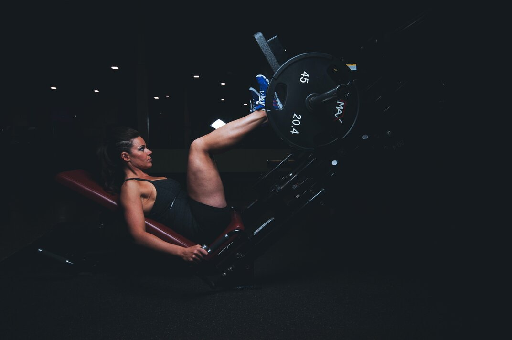
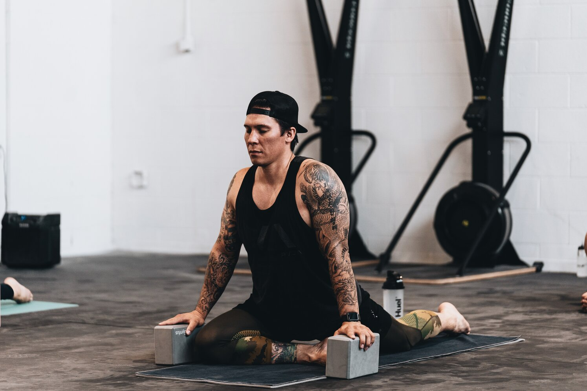

Ejercicios
Los ejercicios de tren superior se enfocan en trabajar los músculos ubicados en la parte superior del cuerpo, incluyendo las regiones musculares de los hombros, la espalda, el pecho, los brazos y el abdomen.
En los hombros, se trabajan los músculos deltoides, que se dividen en anterior, medio y posterior, y también se trabajan los músculos del manguito rotador. En la espalda, se trabajan los músculos de la parte superior, media e inferior, incluyendo los músculos del trapecio, el dorsal ancho y los músculos erectores de la columna vertebral.
En el pecho, se trabaja principalmente el músculo pectoral mayor, y en menor medida, los músculos pectoral menor y serrato anterior. En los brazos, se trabajan los músculos bíceps, tríceps, antebrazos y los músculos de la mano. Finalmente, en el abdomen se trabajan los músculos rectos del abdomen, los oblicuos y los músculos de la espalda baja.
Los ejercicios de tren inferior se enfocan en trabajar los músculos ubicados en la parte inferior del cuerpo, incluyendo las regiones musculares de las piernas, glúteos y abdominales.
En las piernas, se trabajan los músculos cuádriceps, ubicados en la parte frontal del muslo, los músculos isquiotibiales, ubicados en la parte posterior del muslo, los músculos de la pantorrilla y los músculos de los pies. Los ejercicios típicos para trabajar estas regiones musculares son sentadillas, zancadas, peso muerto, prensa de piernas, entre otros.
En los glúteos, se trabaja principalmente el músculo glúteo mayor, que es el músculo más grande de esta zona, y también se trabajan los músculos glúteo medio y glúteo menor. Los ejercicios típicos para trabajar esta región son sentadillas, estocadas, elevaciones de cadera, entre otros.
Los ejercicios de calentamiento son importantes porque preparan al cuerpo para realizar actividad física intensa, reduciendo el riesgo de lesiones y mejorando el rendimiento durante el ejercicio.
Cuando se realiza actividad física, el cuerpo requiere un aumento en la cantidad de oxígeno y energía que suministra a los músculos. Los ejercicios de calentamiento pueden ayudar a preparar al cuerpo para esta actividad al aumentar gradualmente el flujo sanguíneo, la frecuencia cardíaca, la temperatura corporal y la flexibilidad muscular.
Además, los ejercicios de calentamiento pueden ayudar a preparar al cuerpo mentalmente para el ejercicio, mejorando la concentración y la capacidad de respuesta. En general, los ejercicios de calentamiento deben ser suaves, progresivos y específicos para la actividad que se va a realizar. Pueden incluir ejercicios de movilidad articular, estiramientos suaves, ejercicios de respiración y/o ejercicios cardiovasculares ligeros.
